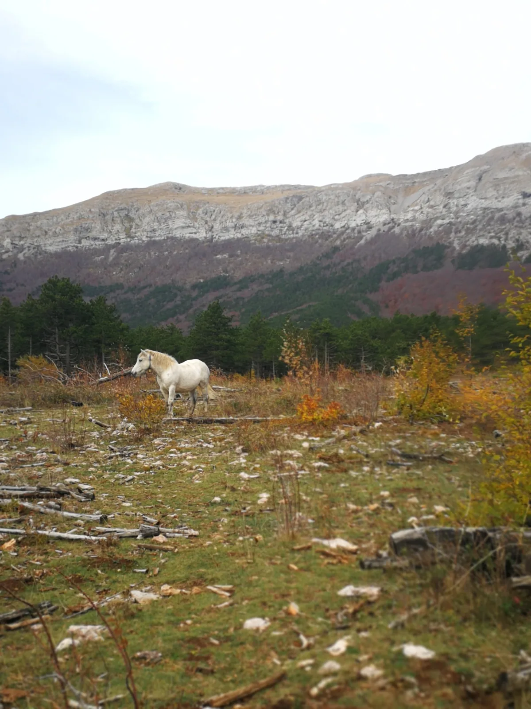

Šešeljevac
Ima jedna stara poslovica; kartu čitaj, a seljaka pitaj. U ovom slučaju isplatilo se i upitati i šumara u nasumično zaustavljenom autu. Više o tome kroz priče Maka i Lička

Mak Sedmak Prošle godine smo Ana Lipovac i ja otišli pretraživati teren između Tadine glavice i Višerujna. Magla je onemogućila naše planove pa smo osim bivanja na Strugama i traženja jame na Goliću, s izleta došli bogatiji za jednu informaciju. Nasumično zaustavljeni automobil vozio je šumar koji nam je rekao da na Šešeljevcu postoji jama. Stavili smo točkicu na kartu i odlučili ga pregledati. To se i dogodilo 3.11. ove godine. Na put smo krenuli iz kišnog Zagreba, tri auta su krenula prema Velikom Rujnu. Putnici su bili: Vesna, Mara, Ivo, Ličko, Kizo, Neven, Lucija, Luka I., Sanda, Zima, pesi i ja. Tamo su nas čekale dvije kuće. U jednu su otišle obitelji, a u drugu stvari. Ostatak ekipe je napravio bivak pa su uživali bez plača beba. Ujutro smo majke, bebe, peseke i zaštitnika Ivu ostavili na milost divljih kopitara koji obitavaju na Rujnu.
[caption id="attachment_2056" align="alignleft" width="271"] Bijeli konj bez viteza[/caption]Ostatak družine je, nakon standarndog razvlačenja, na teren krenuo oko 11h. Preko Ribničkih vrata dolazimo do vrtače i krećemo u potragu baziranu na glasini. Jamu lako nalazimo, a i postavljanje se ne pokazuje kao problem. Dotična ima 8 m, drvo je pored ulaza, pa su jedan bužir i transportka dostatni za ovu akciju. Nakon crtanja se stavila pločica, pa smo kolektivno bili razočarani što je jedini fiks potrošen na označavanje, a da smo 200 m užeta teglili bez veze. Odmah pokraj objekta se nalazi mala pukotina u koju su hrabro krenula dva neiskusna člana, jedan na postavljanje, a drugi na crtanje. Ispostavilo se da je to bilo nepromišljeno jer su kroz pukotinu ušli u veliku vertikalu koja ide gore, a i dolje. Postavili su oni to herojski, no najiskusniji među nama je već bio nabrundan. Oteo je bušilicu, uzeo transportku, te krenuo postavljati u hlačama i jakni. Na naše veliko oduševljenje, nije imao dovoljno užeta, stoga opet moramo na Šešeljevac. Vrtaču smo pregledali i nismo uočili još objekata, to ne znači da ih nema.Pitka voda na površini je problem, a logistički je istraživanje poprilično izazovno. Teren izgleda vrlo perspektivno, a i lijepo. Treba se fokusirati na suradnju s lokalnim stanovništvom i hvatati pogodne vremenske uvjete. Nacionalni park je bio vrlo susretljiv prema nama pa smo imali besplatan ulaz, iskoristili smo ga i u nedjelju, za penjanje i odmor u kanjonu. Najhrabrija među nama se oba dana kupala u izvorima. A sada natrag u Kitu!
[gallery ids="2056,2057,2058,2059" type="rectangular"]Marko Ličko Da i ja neki put fotkam na izletu. U petak šaroliko društvance okupljeno pod organizacijskom palicom Maka kreće sa tri vozila put rujna na vikend istraživanje s ciljem špiljarenja, planinarenja, slekanja i penjanja. Vrijeme nas je "posralo" krasno, cijelim putem kiša i onda od petka navečer idealno toplo sa malko vjetra. U petak navečer smještamo se na Velikom Rujnu, neki u kuću, neki u bivak. Subota ujutro dio ekipe pići na istraživanje jame u vrtači Šešeljevac gdje nas je uputio lokalni šumar.
[caption id="attachment_2066" align="alignnone" width="1685"] Vrtača Šešeljevac[/caption]Put vodi dosta strmo od rujna preko ribničkih vrata do vrtače. Dio ekipe ide do stražbenice po vodu. Nakon lutanja po vrtači našli smo jamu i iako perspektivnog ulaza završava na dubini od 10m. Dok se jama radila ostatak je njuškao okolo i desetak metara dalje pronađen je još jedan objekt. Iako neperspektivnog ulaza i prvih par krušljivih skokića i jednog meandrića dolazi se do ogromne 100m previsne vertikale koja završava na 5x5 bunarskom dnu iz kojeg ide dalje vertikala dolje. Nažalost ostali smo bez opreme i nismo nacrtali jer je već kasno bilo. Ekipa se vratila na rujno nešto prije ponoći. Nedjelja spremanje i spuštanje do Paklenice na malo penjanja i *ebivetravanja i oko 8 smo se svi sretno vratili u Zagreb.
[gallery ids="2062,2066,2065,2060,2064,2063,2061" type="rectangular"]